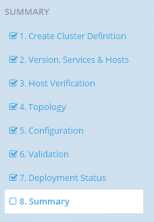

Note: Before you can configure and deploy a cluster, make sure you have already installed the
PHD Services using the CLI (icm_client). See Installation
Instructions for details.
After you have logged in to Pivotal Command Center, the Cluster Status page appears. From here, if you are an administrative user, you are able to use the "Add Cluster" Wizard to configure and deploy a Pivotal HD Cluster.
Important: Clusters deployed via Pivotal Command Center are High
Availability-enabled by default, and are not secured. You can manually disable High
Availability or secure a cluster via the command line; refer to the PHD Installation and
Administrator Guide for instructions.
Click Add Cluster to launch the Wizard. The Add Cluster Wizard screen opens.

As noted on the Add Cluster Wizard screen, the Wizard only supports PHD 2.0.x and PHD 2.1.
The Wizard allows you to create a new configuration from scratch or upload and edit any existing configuration.
As you move through the Wizard, the right hand pane displays where you are in the deployment process:
Next Step: 1. Create Cluster Definition